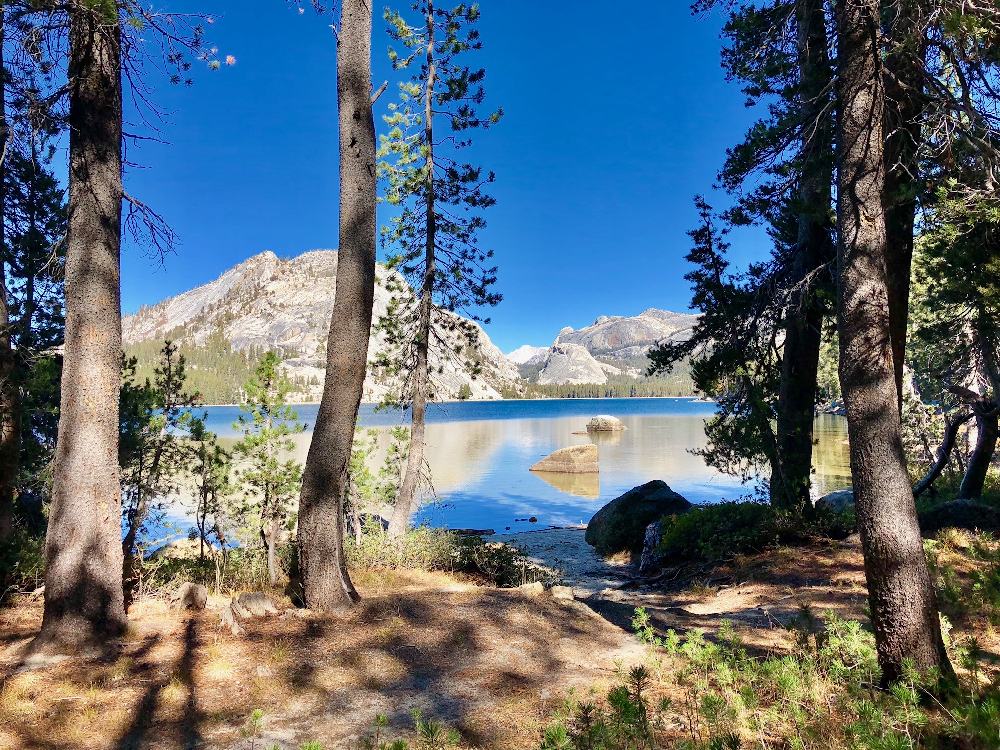

I want to help design cities for people
Throughout my life, I have had the chance to explore large quantity of places, and to meet a lot of unique people. These different experiences have formed my fascination with understanding how cities shape our lives. We come across and meet people in parks, rivers' banks, museums, restaurants, bars, or clubs. Likely, the very same people become friends, and sometime lovers or even family.
Interestingly, I have realized that cities are constantly evolving due to people and technology. I have envisioned that the history of city planning in the era of new technologies is still to be made by people that are following their dreams and their sensibilities. Therefore, I am a French civil servant (part of the Corps des Ingénieurs des Ponts, des Eaux et des Forets) on leave, and I am currently working on efficient transportation systems as a research scientist at Google.
Feel free to contact me or to take a look at my resume.
I am interested in large scale road traffic control
I am working on optimizing road transportation systems at the metropolitan scale.
Game theory
Urban planning
Optimization
Machine learning
Academic publications
Feel free to refer to my google scholar or to my Research Gate.
Journal publications
- Regrets in routing networks: measuring the impact of routing apps in traffic, T. Cabannes, M. Sangiovanni Vincentelli, A. Bayen, ACM Transactions on Spatial Algorithms and Systems, June 2019. DOI: 10.1145/3325916.
Conference publications
- Learning optimal traffic routing behaviors using Markovian framework in microscopic simulation, T. Cabannes, J. Li, F. Wu, H. Dong, A. Bayen, TRB 99th Annual Meeting, Jan 2020.
- Sensitivity analysis and relaxation of the Static Traffic Assignment Problem with Capacity Constraints, T. Cabannes, E. Glista, K. Dwarakanath, X. Rao, T. Veeravalli, A. Bayen, 2019 IEEE Conference on Decision and Control, Dec 2019. DOI: 10.1109/CDC40024.2019.9030149.
- Measuring regret in routing: assessing the impact of increased app usage, T. Cabannes, F. Shyu, E. Porter, S. Yao, Y. Wang, M. Sangiovanni Vincentelli, S. Hinardi, M. Zhao, A. Bayen, (paper 650) IEEE International Conference on Intelligent Transportation Systems, November 2018. DOI: 10.1109/ITSC.2018.8569758.
- Analysis of the impact of GPS-enabled mobility: a game theoric approach, T. Cabannes, M. Sangiovanni-Vincentelli, A. Sundt, E. Porter, V. Fighiera, J. Ugirumurera, A. Bayen, (paper 18-02304) TRB 97th Annual Meeting, January 2018.
Projects
Understanding traffic in Fremont, CA
Understanding the impact of navigational apps on the traffic inside Fremont.
Mean field routing game
Developping a new mesoscopic dynamic traffic assignment.
Experiences
Feel free to refer to my CV or to my LinkedIn .
Corps des Ingénieurs des Ponts des Eaux et des Forêts Sep 2017 - Present
Ingénieur / Engineer for the French governementCercle du Comitium May 2015 - Present
MemberGoogle research Sep 2020 - Apr 2020
Ph.D. student researcherInstructor, GEC January 2020 - December 2020
Mentor of 8 6-weeks long project based programs on Nonlinear programming.Graduate Student Instructor, UC Berkeley August 2019 - May 2020
Head of the teaching staff for EECS127/227AT, a class on convex optimization with 350 students.Hub France IA Apr 2018 - Aug 2018
Former project managerAssemblée nationale Jun 2015 - Sep 2015
Former legislative assistantGendarmerie Nationale Sep 2014 - Aug 2015
Former police officerEducation
Feel free to refer to my CV or to my LinkedIn.
Doctorant, Ecole Polytechnique 2019 - Present
Part of the LIX (Laboratoire d'informatique de l'Ecole Polytechnique) in the Institut Polytechnique de ParisDoctor of Philosophy, UC Berkeley 2018 - 2022
GPA: 3.878Major: Control, Intelligent Systems, Robotics.
Minors: Algorithms, Urban planning.
Master of Science, UC Berkeley 2018 - 2019
GPA: 3.86Major: Electronical Engineering and Computer Science.
Minors: Development Engineering.
Master of Science in Urban Planning, ENPC 2017 - 2018
As part of a Government Executive Program for joining a leading corps of French Civil Servants (IPEF).Master of Science in Applied Maths, Ecole Polytechnique 2014-2018
GPA: 3.8Major: Information System Design.
Minors: Physics, Economics, Operational Research.
Honors and awards
Feel free to refer to my CV or to my LinkedIn.
Outstanding Graduate Instructor 2020
University of California, BerkeleyCSCRS Student Road Safety Travel Grant Aug 2018
SafeTREC, UC BerkeleyResearch Internship Prize Dec 2016
CS department, Ecole polytechniqueOutstanding Investment Award Dec 2016
Ecole polytechniqueMédaille de la défense nationale Jun 2015
French ArmyCommendation letter Jun 2015
Commandant of the Air Transport Gendarmerie, Gendarmerie nationaleAbout my research
Non technical writings

October, 2017
Paris et ses banlieux, une équation impossible
Why suburbs of Paris will always remain landlocked? (article in French)
March, 2019
Quelle est la vision de l'État français pour les transports en 2040 ?
State and transportation regulation (article in French)
Poems I like

Je vous souhaite de souhaiter
Jacques Brel

If
Rudyard Kipling

The Final Speech, The Great Dictator
Charlie Chaplin
Getting involved
I believe that they are billions of things to build for making the world a better place. I believe that we need everyone expertise to design systems that serve communities. I am happy to work with anyone that are interested in projects that I am working on.
I am also happy to contribute to any project where I can help. Feel free to send me an email.